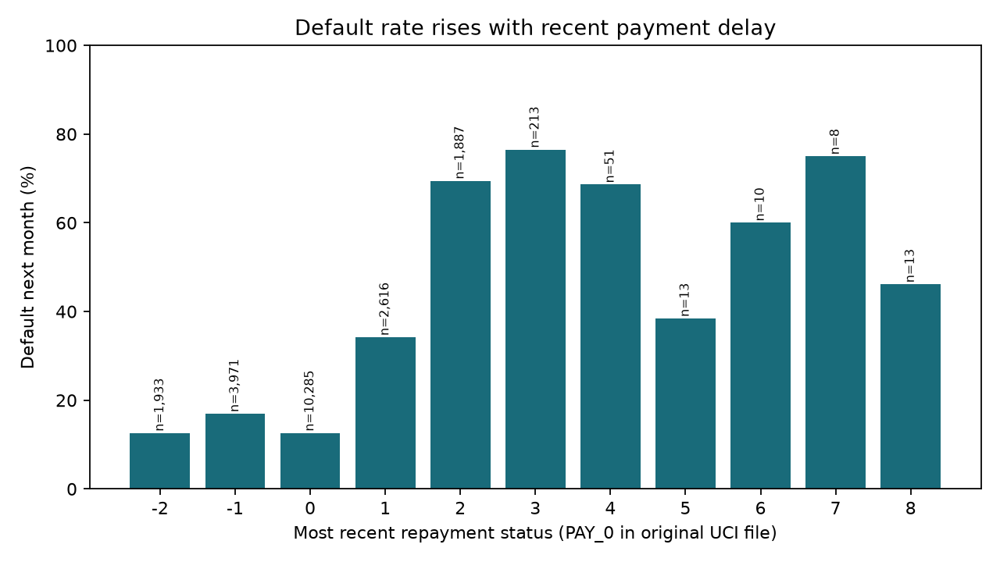
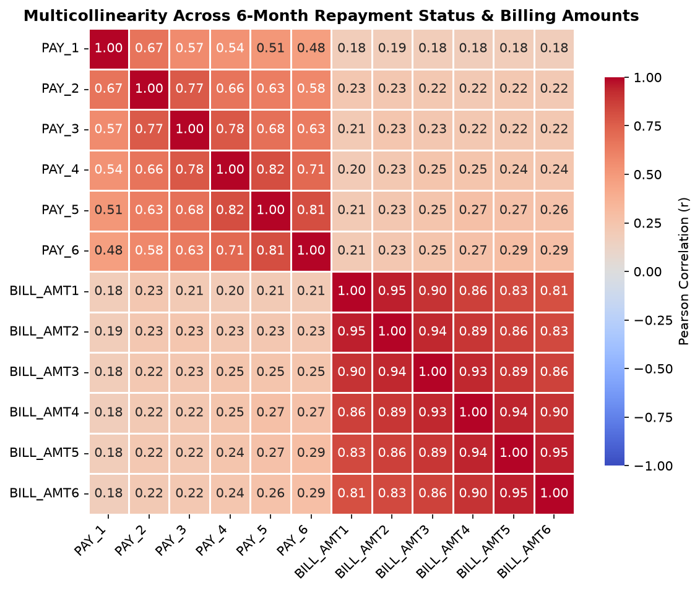

An ES 335 research journal
Credit
default.
The cost of a wrong call.
Six models estimate risk. One question turns probability into a decision: what should a missed default cost?
The research question
Can past payments signal next-month default?
One row is one credit-card client account. The target is whether that client defaults in the following month (TARGET = 1). We estimate that probability from information available before the outcome: credit limit, demographics, six repayment statuses, six bills, and six payments.
The second question is a decision question: if a missed default is more expensive than a false alarm, where should we set the probability threshold for flagging an account?
Source: UCI Default of Credit Card Clients. These are historical Taiwan accounts from 2005.
From records to model input
A fixed split keeps the roles of the data clear.
The split is stratified 70/15/15 with seed 42. The ID is removed. Undocumented education and marriage codes are grouped as “other”; negative bill balances are retained. The raw source has no missing cells. We rename PAY_0 to PAY_1 so the repayment months read in order.
Feature engineering adds credit utilization, payment-to-bill ratio, maximum delinquency, delayed-month count, and debt trend. Numeric variables are standardized and categories one-hot encoded. Learned preprocessing is fitted inside each training fold, so a fold being checked does not supply its own scaling values.



Models and evaluation
Different models, one comparison protocol.
Baseline models
The majority dummy always predicts no default. L2 and L1 logistic regression supply linear baselines; an RBF SVM tests a nonlinear decision boundary. The comparison uses the saved isotonic-calibrated SVM probabilities.
Tree ensembles
Random Forest averages many trees. HistGradientBoosting builds small trees sequentially, correcting earlier errors. Their settings were selected with five-fold stratified cross-validation on the training split, scored by average precision.
PR-AUC asks how well high-ranked accounts concentrate actual defaults. It matters because defaults are only 22.1% of accounts.
ROC-AUC asks how often a randomly chosen defaulter gets a higher score than a non-defaulter.
Brier score measures probability error: lower is better. A threshold then turns probabilities into flags, producing missed defaults and false alarms.
Validation evidence · 4,500 accounts
Explore how the six models compare.
Move the budget across the ROC chart. Each colored marker shows the share of actual defaults found at that false-positive rate. Choose a model to isolate its line; switch to precision–recall to inspect the minority class more directly.
Ranking explorer
ROC curve: recall against false-positive rate, measured on validation.
At this point
ROC is threshold-free: the chart shows ranking at many possible operating points. The slider is for exploration, not a threshold selected for deployment.
Metric comparison
Dots enlarge smoothly on hover or keyboard focus. Select a metric to see where the models differ.
Random Forest has slightly higher validation PR-AUC than HistGradientBoosting. The final choice also considers assumed error cost.
Cost at the same threshold
All six models use 0.1304 here, so the assumed losses are directly comparable.
The dummy predicts no defaults and therefore misses all 995 validation defaults. At these costs, HistGradientBoosting has the lowest validation loss.
Turning probability into action
Why the final threshold is 0.135.
A threshold of 0.50 flags only accounts with at least 50% predicted risk. That can miss many defaults. If probabilities are calibrated and the stated costs apply, their ratio gives a theoretical threshold of 0.1304 = 1,500 ÷ (10,000 + 1,500). The project then swept thresholds on validation and selected 0.135 for HistGradientBoosting because it had the lowest validation cost.
Validation threshold explorer
Change the model or threshold to see the trade-off on validation. This does not retrain any model.
Exploratory values use 0.01 steps. The reported HistGradientBoosting choice, 0.135, came from a finer 0.001-step validation sweep in the project code. No test labels were used for that choice.
Final held-out evaluation
What happened on the test accounts?
The reported choice is HistGradientBoosting at threshold 0.135. On 4,500 held-out accounts it achieved PR-AUC 0.5596, ROC-AUC 0.7798, and Brier 0.1348. It missed 171 actual defaults and falsely flagged 1,686 non-defaults. Under the assumed costs, its test loss was $4,239,000, compared with $6,677,000 at threshold 0.50.
Explore fixed test predictions
This slider recalculates counts from the saved HistGradientBoosting test probabilities. It is descriptive: changing it here does not change the reported threshold or run the model again.
What the result does not settle
The mistakes still matter.
Missed defaults
At the selected threshold, 171 test accounts defaulted despite scores below 0.135. These are especially costly under our assumptions. Aggregate counts are available; this site does not claim a verified borrower-level cause for those misses.
False alarms
1,686 test accounts were flagged but did not default. Lowering the threshold catches more defaults while increasing these flags. The website cannot show whether a real intervention would have helped or harmed them.
The data describe Taiwan accounts in 2005. They have no observed loss amounts, recovery values, or intervention outcomes. Demographic variables raise fairness questions that need separate group analysis before operational use. These results support a retrospective comparison, not a live lending policy.
Check the work
Every plotted claim has a source.
Charts on this site use the saved validation probability arrays and results/val_leaderboard.csv. The test panel uses saved HistGradientBoosting test probabilities. The repository contains code, fixed split CSVs, model settings, and the complete results. See the project README for full setup instructions and citations.
- Install packages listed in
requirements.txt. - Run the data audit and fixed split scripts in
src/. - Run baseline, calibration, ensemble, and evaluation scripts.
- Run
src/cost_optimizer.pyto reproduce the validation-selected threshold and held-out test result. - Run
python website-preview/generate_chart_data.pyto rebuild this site’s chart data.
Team contribution
Abhishek worked on the data audit, split, preprocessing, baselines, calibration, and walkthrough. Siddhantkumar worked on tree ensembles, cost threshold evaluation, and the static website. The repository README records the detailed division.
AI-use disclosure
Google Gemini and OpenAI Codex/ChatGPT assisted with Python pipeline scaffolding, diagnostic plots, website layout and wording, and the original halftone hero illustration. The team is responsible for independently checking the code, mathematical results, and claims. The illustration prompt is saved in the repository.
Citations: Yeh, UCI Default of Credit Card Clients; Pedregosa et al., scikit-learn. Figures and layout are original to this project. The interactive graph style takes inspiration from the example project site; its dataset, results, text, and graphics are not used here.